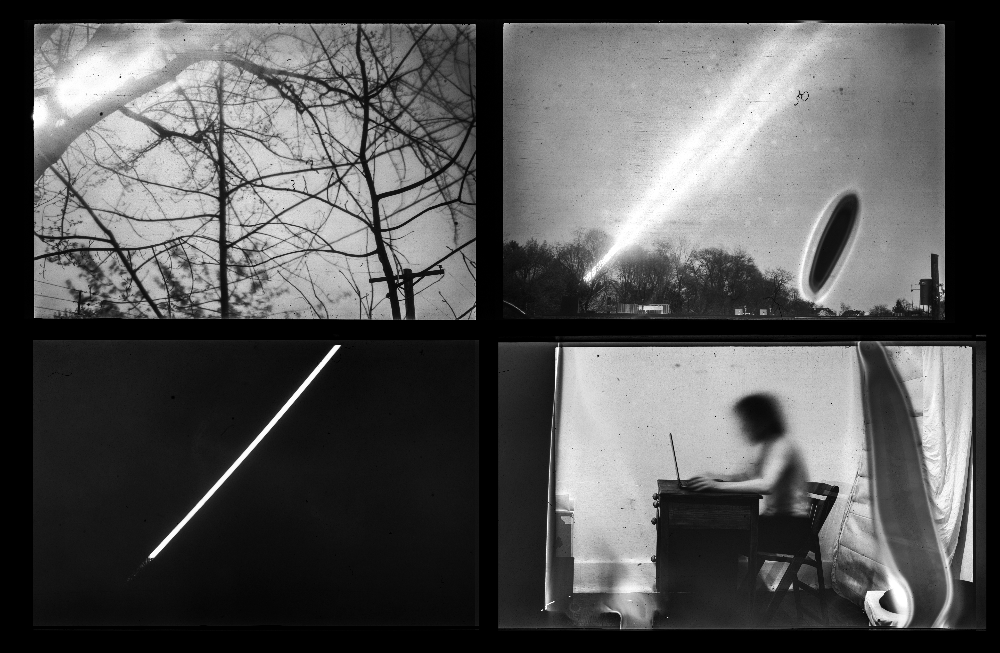
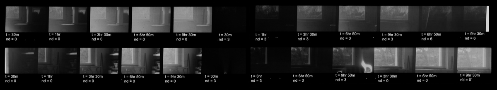
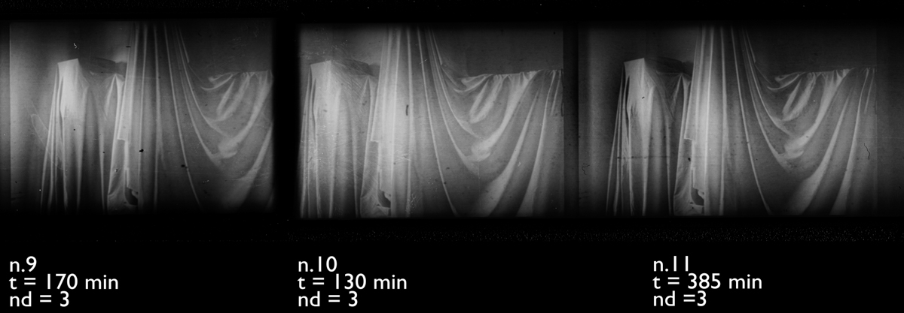
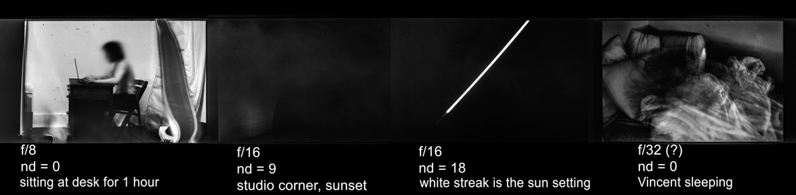

This project captures the motion of the sun using ultra-long exposure film photography.
This project examines photography in two modes:
The first is with a focus on what’s presented in the image– subject matter, and narrative.
The second is a focus on how the image is created– technique and technology.
This project developed to prioritize these equally– to have the medium interlinked with the meaning.
It tells a story about my experience with time and boredom and sleep disorders,
and attempts to solve technical challenges which
I haven’t seen attempted before.
I chose the sun as subject matter because it's speed is universally understood and it leaves a distinct mark.
The sun can be used as a key to deciphering the exposure duration without the image needing external context.
I also am aquainted with daylight as a motif in other projects to represent
the time as something that becomes stuck or dislodges. It feels beautiful and empty to me.
Something I was considering for this project was to build a simple rig to help myself stay still
and pose in-frame while the sun streaked across the sky behind me,
turning the photo into a self portrait and duraional performance piece.
This image is still the final goal for the project, but I no longer have access to film photography equipment.
The other motivation for this project was curiosity about the limits of photography. I've seen film photography projects push into the 2-3 hour range (such as Hiroshi Sugimoto's Theatres and Paul Thompson's Moonlight series), as well as months-long solargrams burned into paper, but nothing yet falling in the middle. Getting to my intended 3-12 hour duration was a process of carefully collecting data as well as of trial and error.
As someone whose never worked with film photography before, I was also exploring how photogaphy represents time in a single frame compared to how video represents time across a series of frames. The single frame contains as much experience as the video or lived event, but all the hours are compacted into the same place and moment. This means the long-exposure photo is an object with an unusual density of time.
  